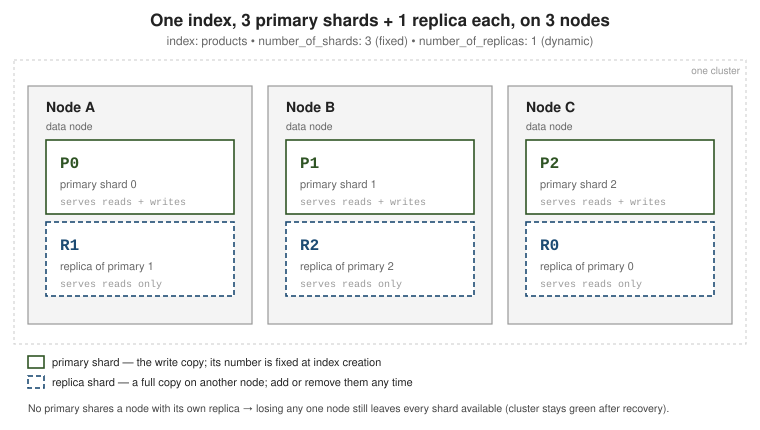
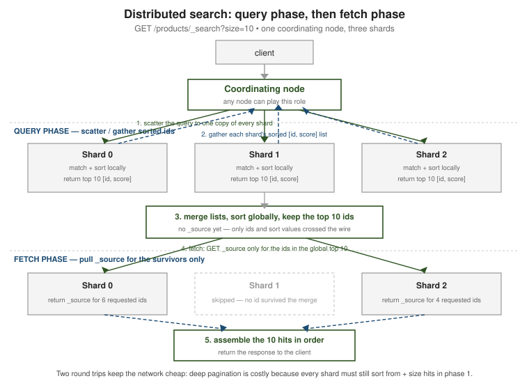

Cluster, nodes & shards
|
This content was generated with the assistance of AI and should be verified against the official documentation before being relied on in production. |
An Elasticsearch cluster is a set of nodes that together hold your indices. Every index is split into shards so it can outgrow a single machine, and each shard is copied so the loss of a node is not the loss of data. This page covers that hierarchy, the roles a node can take, how nodes find each other and elect a master, how a request reaches the right shard, and how to read the cluster’s health.
Cluster, node, index, shard, segment
The units nest:
-
Cluster — one or more nodes sharing a
cluster.nameand one cluster state. -
Node — one
elasticsearchprocess, usually one per host. -
Index — a named collection of documents (see Documents, indices & the inverted index).
-
Shard — a slice of one index; a full, self-contained Apache Lucene index that can live on any data node.
-
Segment — an immutable file inside a shard holding some of its documents; segments are written on refresh and merged in the background.
A shard is either a primary (it accepts writes, then forwards them to its copies) or a replica (a byte-for-byte copy of a primary on a different node, kept in sync, that serves reads). Replicas do double duty: they are the high-availability mechanism — promote a replica when a primary’s node dies — and they add read throughput, because a search for a shard can be answered by the primary or any of its replicas, so more replicas means more nodes sharing the query load.

number_of_shards is chosen once, at index creation, and is immutable afterwards — changing it
means reindexing, or a _split / _shrink into a new index
(Index lifecycle & scaling).
number_of_replicas is dynamic — raise or lower it live and the cluster copies or drops shards
to match.
PUT /products
{
"settings": {
"number_of_shards": 3, // fixed for the life of the index
"number_of_replicas": 1 // one copy of every primary
}
}
// Dynamic: add a second replica for more redundancy and read capacity.
PUT /products/_settings
{ "index.number_of_replicas": 2 }
// Where every shard sits: prirep = p (primary) or r (replica), plus its state.
GET /_cat/shards/products?v&h=index,shard,prirep,state,node
// https://www.elastic.co/guide/en/elasticsearch/reference/current/scalability.htmlNode roles
A node advertises a set of roles in elasticsearch.yml; the roles decide what work it will
accept. The ones you set in practice:
| Role | What it does |
|---|---|
|
Master-eligible: can be elected cluster master, which owns the cluster state (index metadata, shard allocation, node membership). Exactly one elected master at a time. |
|
Holds indices that are not time-series (catalogues, users) — no tier rollover. |
|
Holds the most recent, most-queried time-series data on the fastest storage; takes the indexing load. |
|
Holds time-series indices no longer written to but still queried fairly often. |
|
Holds rarely queried, read-only indices, often as searchable snapshots with no replicas. |
|
Mounts searchable snapshots directly from object storage with a local cache; the cheapest, slowest tier. |
|
Runs ingest pipelines before a document is indexed. |
|
Runs machine-learning and NLP jobs. |
|
May connect out to remote clusters (cross-cluster search / replication). |
(empty list) |
A coordinating-only node: routes requests and merges results, holds no data, is never master. A useful gather/load-balancing layer for heavy search fan-out. |
# A dedicated master node -- do nothing else on it.
node.roles: [ master ]
# A hot data node that also runs ingest pipelines.
node.roles: [ data_hot, data_content, ingest ]
# A coordinating-only node: the empty list is deliberate, not a default.
node.roles: [ ]GET /_cat/nodes?v&h=name,node.role,master,heap.percent,disk.used_percent
// node.role letters: m master-eligible, d generic data, s/h/w/c/f data tiers,
// i ingest, l ml, r remote_cluster_client, - coordinating only
// https://www.elastic.co/guide/en/elasticsearch/reference/current/modules-node.htmlThe data tiers let index lifecycle management migrate an index from hot to warm to cold to frozen as it ages, matching storage cost to query value. See Data tiers.
Dedicated master guidance. For any production cluster, run three dedicated master-eligible nodes
with node.roles: [ master ] and nothing else. Keeping data and ingest work off them means a heavy
query or a merge storm cannot stall cluster-state updates, and three gives a quorum of two so the
cluster survives losing one. Never run two master-eligible nodes: that needs both alive for quorum,
which is less available than one.
Discovery & cluster formation
Discovery is how a starting node finds the others. It contacts the addresses in
discovery.seed_hosts, learns the current master (or the other master-eligible nodes), and joins.
The first time a brand-new cluster starts, there is no master to find, so you must bootstrap the
initial voting configuration by naming the founding master-eligible nodes in
cluster.initial_master_nodes. This setting is read only on the very first startup — leave it in
place afterwards and it can cause a cluster to split its brain on a full restart, so remove it once
the cluster has formed.
# elasticsearch.yml -- forming a new three-node cluster.
discovery.seed_hosts: [ "10.0.0.1:9300", "10.0.0.2:9300", "10.0.0.3:9300" ]
# ONLY on the first bootstrap of a NEW cluster. Delete after the cluster is up.
cluster.initial_master_nodes: [ "es-01", "es-02", "es-03" ]
# https://www.elastic.co/guide/en/elasticsearch/reference/current/modules-discovery.htmlMaster election uses the voting configuration: the set of master-eligible nodes whose votes count (usually all of them). A node becomes master only with a quorum — a strict majority of the voting configuration — so a network partition can leave at most one side able to elect. Elasticsearch resizes the voting configuration automatically as master-eligible nodes join and leave, always keeping it odd-sized where it can.
The elected master publishes the cluster state to every node on each change. It contains all index mappings, so a cluster with thousands of fields or many hundreds of indices has a large state that is expensive to diff and broadcast — one reason to cap field counts and consolidate tiny indices.
// The elected master and the current voting configuration.
GET /_cluster/state/master_node,metadata?filter_path=master_node,**.last_committed_config
// Cluster-state weight is dominated by mappings; watch the field count.
GET /_cluster/stats?filter_path=indices.mappings,indices.shards.totalRouting & distributed execution
Routing decides which primary shard a document belongs to:
shard = hash(_routing) % number_of_shards # _routing defaults to the document _id
Because number_of_shards is in that formula, it cannot change without moving every document — the
reason the count is fixed at creation.
// Default: routing = _id, so documents spread evenly across the 3 shards.
PUT /products/_doc/p-42
{ "name": "Widget", "tenant": "acme" }
// Custom routing: force one tenant's documents onto a single shard, so a
// filtered search can be told to hit just that shard.
PUT /products/_doc/p-42?routing=acme
{ "name": "Widget", "tenant": "acme" }
GET /products/_doc/p-42?routing=acme // GET, update, delete MUST repeat the same routing
// Which shards a search would touch:
GET /products/_search_shards?routing=acme
// https://www.elastic.co/guide/en/elasticsearch/reference/current/mapping-routing-field.htmlThe trade-off of custom routing: searches that filter by the routing value get much cheaper (one shard instead of all), but a popular value creates a hot shard that is bigger and busier than its peers, and you must thread the routing value through every read of those documents.
Distributed indexing. A write goes to the primary, which applies it locally and then forwards it
in parallel to every in-sync replica; it acknowledges once enough copies have it.
wait_for_active_shards (default 1, meaning the primary alone) sets how many copies must be
available before the write is even attempted.
Distributed search is query-then-fetch, two round trips:

-
Query phase — the coordinating node scatters the query to one copy (primary or replica) of every shard. Each shard matches, sorts locally, and returns just the top
from + sizedocument ids and sort values — no_source. -
The coordinating node merges those lists and sorts globally to pick the real top
size. -
Fetch phase — it asks only the shards that own those surviving ids for their
_source, assembles the hits in order, and replies.
This is why deep pagination is expensive: every shard must sort and ship from + size entries in
phase 1 even though almost all are discarded — use search_after with a Point in Time instead
(Search API & pagination). See
The search API
and
Reading and writing documents.
Cluster health
GET /_cluster/health rolls the state of every shard into one colour:
GET /_cluster/health
// status: green -- every primary AND every replica is assigned
// yellow -- every primary is assigned, but some replica is not
// red -- at least one primary is unassigned: that data is unavailable
// https://www.elastic.co/guide/en/elasticsearch/reference/current/cluster-health.html
GET /_cluster/health/products?level=shards // drill into one indexA single-node cluster is permanently yellow, because a replica can never be placed on the same node as its primary. When a shard is stuck unassigned, ask why:
GET /_cluster/allocation/explain
{ "index": "products", "shard": 0, "primary": false }
// -> a human-readable reason: no matching node, disk watermark exceeded,
// allocation filtering, too many retries after a failure, ...Acting on that explanation — disk watermarks, allocation awareness, forced allocation, and taking snapshots before recovery work — is covered in Administration, monitoring & snapshots.
The primary/replica split here is Elasticsearch’s take on ideas the document databases model differently: replica shards play the role of MongoDB replica set members (with automatic promotion on failure), while sharding an index by a routing hash is the counterpart of MongoDB sharding by shard key — except the shard count is fixed up front rather than grown by adding shards later.